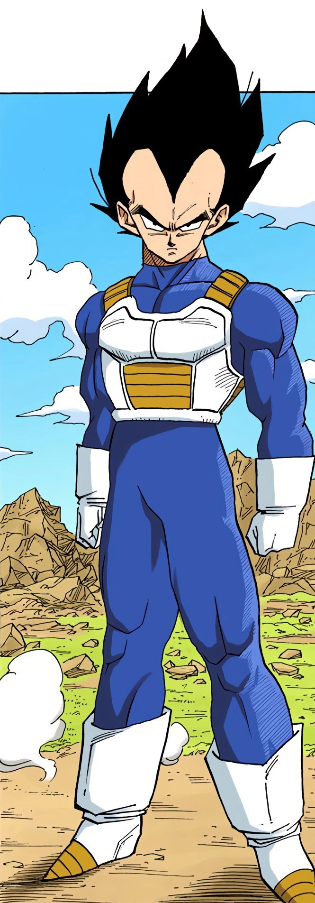

Karakters
Inleiding
Hier is een introductie van sommige van de vele karakters in de Dragon Ball Franchise.
Son Goku
Son Goku, geboren Kakarot, is een Saiyan die op aarde is opgegroeid en is de hoofdpersoon van de Dragon Ball-serie. Hij is de tweede geboren zoon van Bardock en Gine, de echtgenoot van Chi-Chi, en de vader van Gohan en Goten. Oorspronkelijk door zijn ouders als kind naar de aarde gestuurd, werd Kakarot geadopteerd door opa Gohan en omgedoopt tot Son Goku. Een hoofdletsel op jonge leeftijd veranderde Goku's geheugen, bevrijdde hem van zijn aanvankelijke destructieve aard en stelde hem in staat om op te groeien tot een van de grootste verdedigers van de aarde. Goku streeft er voortdurend naar en traint om de sterkst mogelijke krijger te zijn, die de aarde en het universum meerdere keren heeft beschermd.
Vegeta
Vegeta, meer specifiek Vegeta IV, erkend als Prins Vegeta, is de prins van het gevallen Saiyan-ras en de echtgenoot van Bulma, de vader van Trunks en Bulla, de oudste zoon van koning Vegeta, evenals een van de hoofdpersonen uit de Dragon Ball-serie. Vorstelijk, egoïstisch en vol trots was Vegeta ooit een meedogenloze, koelbloedige krijger en regelrechte moordenaar, maar verliet later zijn positie bij de Frieza Force voor een vredig leven op aarde. Hij vocht herhaaldelijk samen met de machtigste krijgers van Universum 7 om de aarde en zijn familie te beschermen, en om Goku aan de macht te overtreffen. Vegeta's sterke karakterontwikkeling heeft veel lof gekregen en wordt beschouwd als de grootste in de serie. Hij debuteerde aanvankelijk als de belangrijkste antagonist van de Vegeta Saga, maar evolueerde naar een meer anti-heroïsche tritagonistische rol voor de rest van Dragon Ball Z. Sinds de Majin Buu Saga en het ingaan op Dragon Ball Super is Vegeta de belangrijkste deuteragonist / secundaire hoofdrolspeler. achter Goku.
Krillin
Krillin is een belangrijke hoofdrolspeler in de Dragon Ball-serie. Hij is een van de meest krachtige en getalenteerde krijgers op aarde. Hij is moedig, trouw en goedaardig. Krillin had een korte rivaliteit met Goku toen ze voor het eerst trainden onder Master Roshi, maar ze werden al snel levenslange beste vrienden, tot het punt dat Goku net zo veel voor hem zorgt als zijn familie en naasten. Hij is een prominente Z-strijder, ondanks dat hij meestal wordt overmeesterd door de grootste vijanden. Zijn korte gestalte en kaalheid (met uitzondering van wanneer hij zijn haar uitgroeit in de Majin Buu Saga, hoewel hij af en toe zijn hoofd scheert in verschillende sagen in Dragon Ball Super) helpen hem in zijn vermogen om komische verlichting te bieden tijdens gespannen momenten. Tijdens de tweede helft van Dragon Ball Z trekt hij zich grotendeels terug uit vechten en kiest hij ervoor om zich te vestigen met zijn familie en wordt hij de echtgenoot van Android 18 en de vader van Marron. Vanwege alles wat er tijdens de Golden Frieza Saga gebeurt, keert hij echter als krijger terug naar zijn levensstijl in Dragon Ball Super.
Son Gohan
Son Gohan is een Saiyan in een halfbloedige Saiyan en een van de meest prominente personages uit de Dragon Ball-serie. Hij is de oudste zoon van de hoofdpersoon van de serie, Goku en zijn vrouw Chi-Chi, de oudere broer van Goten, de echtgenoot van Videl en vader van Pan. Hij is vernoemd naar Goku's adoptievader Gohan. In tegenstelling tot zijn vader is Gohan een briljante geleerde en mist hij een passie voor vechten, en geeft dat alleen liever als zijn geliefden worden bedreigd. Desalniettemin brengt hij een groot deel van zijn leven door met het deelnemen aan de verdediging van de aarde, vaak om de getijden te keren wanneer de sluimerende diepten van zijn macht worden losgelaten.

Bulma
Bulma is een briljante wetenschapper en de tweede dochter van de oprichter van Capsule Corporation Dr. Brief en zijn vrouw Bikini, De jongere zus van Tights, en is Goku's eerste vriend. Ze was de vriendin van Yamcha, maar ging verder (terwijl ze bevriend met hem bleef) en uiteindelijk werd ze de vrouw van Vegeta, evenals de moeder van Trunks en Bulla. Een technologisch en wetenschappelijk genie dat haar talenten in bijna elk veld kan veranderen en bijna moeiteloos buitenaardse technologie kan begrijpen, haar uitvindingen en de middelen van Capsule Corporation, zijn van onschatbarend voor Goku en de rest van het vele malen. Haar meest opvallende uitvinding is de Dragon Ball Rader. Bulma is het belangrijkste vrouwelijke karakter in de serie. Afgezien van Goku is Bulma het langstlopende personage in de hele metaserie, geïntroduceerd in het eerste Dragon Ball-hoofdstuk en -aflevering en behoudt een prominente rol tot het einde van de serie.
Shenron
Shenron, ook bekend als Shen Long, is een magische draak uit de Dragon Ball-franchise. In de Engelse dub van Dragon Ball wordt hij vooral de "eeuwige draak" genoemd en in de vroege Harmony Gold-dreef uit de jaren tachtig staat hij bekend als de "Dragon God". Shenron kan een wens uitbrengen als je alle 7 Dragon Balls hebt gevonden. De series is naar hem vernoemd.
Beerus
Beerus is de God van de vernietiging van het Universum 7. Hij wordt vergezeld door zijn vechtsportleraar en mentoor, Whis. De tweelingbroer van Beerus is Champa, de god van de vernietiging van Universum 6. Beerus is de antagonist van de film Dragon Ball Z: Battle of Gods en de 'God of Destruction Beerus Saga', maar wordt een bijdragend personage in latere afleveringen.
Frieza
Frieza is de belangrijkste antagonist van de Dragon Ball-serie. Hij is de afstammeling van Chilled, de jongste zoon van King Cold, de jongere broer van Cooler en de vader van Kuriza. Door het imperialistische leger van zijn vader te erven en op jonge leeftijd aan de macht te komen als keizer van Universum 7, vestigde Frieza zich al snel als een meedogenloze tiran, die in het hele universum werd gevreesd vanwege zijn ongeëvenaarde wreedheid en macht. Sinds zijn invasie van Namek is Frieza de meest terugkerende slechterik van de serie. Hij botste verschillende keren met zijn aartsvijand Goku en zijn bondgenoten en werd elke keer nog machtiger. Frieza is primair verantwoordelijk voor de genocide op de Saiyans en fungeert als de belangrijkste antagonist van de overkoepelende Frieza Saga en Golden Frieza Saga, evenals als een gemene hoofdrolspeler tijdens de Universe Survival Saga.